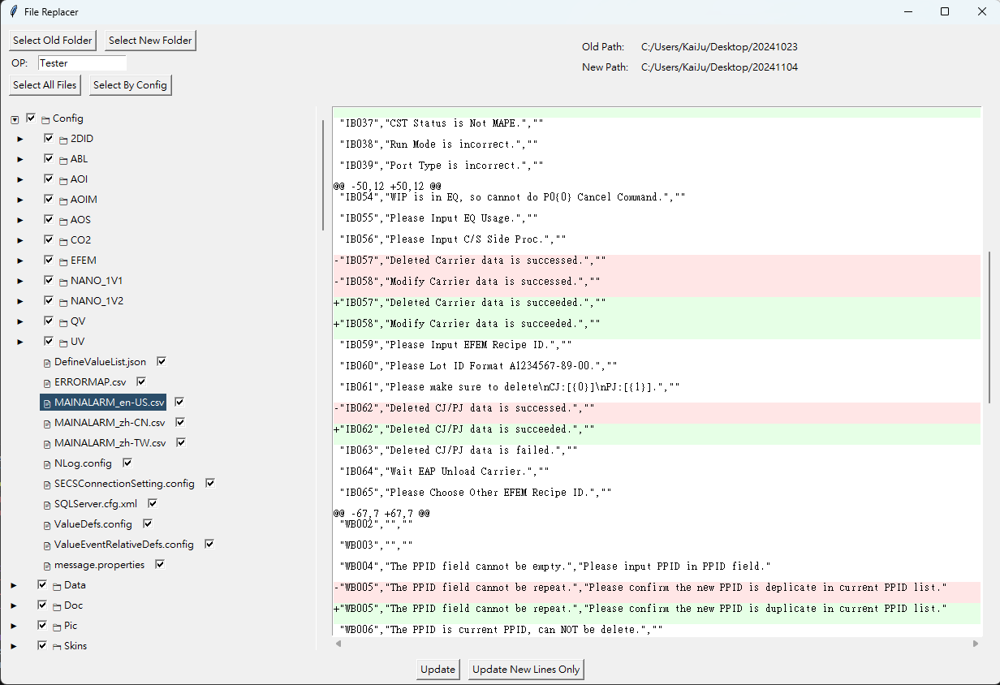
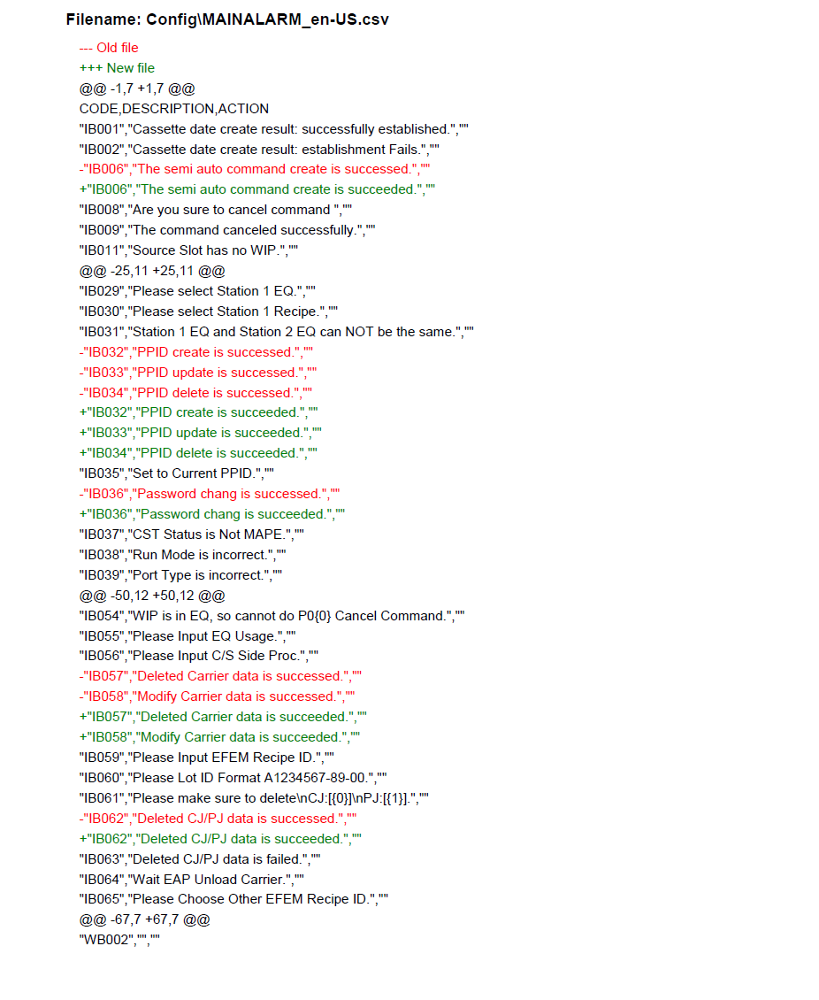

Replacer (English)
This application helps manage and replace files in a folder containing both old and new versions. It provides a clear view of the files and highlights the differences between versions, making updates and comparisons simple and efficient.
Git link: https://github.com/KaiJuY/Replacer
Features
- 📁 Dual Folder Comparison - Compare old and new folder structures side-by-side
- 🔍 File Diff Viewer - Visual comparison with color-coded additions (green) and deletions (red)
- ✅ Selective Updates - Choose which files to update using checkboxes
- 🔄 Two Update Modes:
- Full Update - Complete file replacement
- New Lines Only - Add only new lines without modifying existing content
- 💾 Automatic Backup - Creates timestamped backup before any update
- 📄 PDF Report Generation - Automatically generates update reports with diffs
- 👤 Operator Tracking - OP ID field for accountability and report tracking
- ⚙️ Configuration Support - Pre-configure file selections via
config.ini
Requirements
- Python 3.8 or higher
- Dependencies (install via requirements.txt):
- tkinter (usually included with Python)
- reportlab
Installation
- Clone the repository:
git clone https://github.com/KaiJuY/Replacer.git
cd Replacer
- Install dependencies:
pip install -r requirements.txt
How to Run
python main.py
GUI Operation Guide

Top Section Buttons
- Select Old Folder: Select the folder containing the files you want to replace (target folder).
- Select New Folder: Select the folder containing the updated files (source folder).
- OP Field: Enter your Operator ID. This field is required before you can perform any updates.
- Select All Files: Quickly check all files in the file tree for updating.
- Select By Config: Load file selections from
config.ini.
File Browser Section (Left Panel)
Displays a hierarchical tree view of all files. Click on any file to view its differences.
File Comparison Section (Right Panel)
Displays differences between old and new versions:
- Lines with red background (-) indicate content removed.
- Lines with green background (+) indicate content added.
Update Buttons (Bottom)
- Update: Performs a full file replacement.
- Update New Lines Only: Performs a partial update, only adding new lines.
Configuration File (config.ini)
Create a config.ini file in the same directory as main.py:
[Files]
file1.txt = True
file2.py = False
folder/file3.js = True
Backup & Reports
- Backups: Automatically created in the parent directory of the old folder with format:
{folder_name}_backup_{YYYYMMDD_HHMMSS}
- PDF Reports: Saved in the
pdf/ folder with format: {YYYYMMDD_HHMMSS}_{OP_ID}.pdf
Report Sample:

Troubleshooting
- Buttons are disabled: Make sure to enter an OP ID.
- Permission errors: The application automatically handles read-only files.
- Unicode in diffs: Files with Chinese characters will show "Diff omitted" in PDF reports.
Completed Features
- ✅ Partial update functionality (New Lines Only)
- ✅ PDF report generation with update details
- ✅ Default file selection based on differences
- ✅ Configuration-based file selection
- ✅ Automatic backup system
- ✅ Operator ID tracking
Replacer (繁體中文)
此應用程式可用於管理和取代資料夾中包含的新舊版本檔案，提供清晰的檔案檢視，並突顯版本間的差異，使更新與比較變得簡單且高效。
Git link: https://github.com/KaiJuY/Replacer
功能特色
- 📁 雙資料夾比對 - 並排比較新舊資料夾結構
- 🔍 檔案差異檢視器 - 以顏色標示新增（綠色）和刪除（紅色）的內容
- ✅ 選擇性更新 - 使用勾選框選擇要更新的檔案
- 🔄 兩種更新模式：
- 完整更新 - 完全取代檔案
- 僅新增行 - 只新增新的內容行，不修改現有內容
- 💾 自動備份 - 更新前自動建立帶時間戳記的備份
- 📄 PDF 報告產生 - 自動產生包含差異的更新報告
- 👤 操作者追蹤 - OP ID 欄位用於責任歸屬和報告追蹤
- ⚙️ 設定檔支援 - 透過
config.ini 預先設定檔案選擇
系統需求
- Python 3.8 或更高版本
- 相依套件（透過 requirements.txt 安裝）：
- tkinter（通常隨 Python 安裝）
- reportlab
安裝方式
- 複製儲存庫：
git clone https://github.com/KaiJuY/Replacer.git
cd Replacer
- 安裝相依套件：
pip install -r requirements.txt
執行方式
python main.py
GUI 操作指南
頂部按鈕區
- 選擇舊資料夾： 選擇包含您想要取代的檔案的資料夾（目標資料夾）。
- 選擇新資料夾： 選擇包含更新檔案的資料夾（來源資料夾）。
- OP 欄位： 輸入您的操作者 ID。此欄位為必填，必須填寫後才能執行更新。
- 選擇所有檔案： 快速勾選檔案樹中的所有檔案以進行更新。
- 依設定選擇： 從
config.ini 載入檔案選擇設定。
檔案瀏覽區（左側面板）
顯示所選資料夾中所有檔案的階層樹狀檢視。點擊任何檔案可在比較區檢視其差異。
檔案比較區（右側面板）
顯示新舊版本之間的差異：
- 紅色底色 (-) 的行表示在新版本中被移除的內容。
- 綠色底色 (+) 的行表示在新版本中新增的內容。
更新按鈕（底部）
- 更新： 執行完整檔案取代。
- 僅更新新增行： 執行部分更新，只新增全新的內容行。
設定檔（config.ini）
在 main.py 的相同目錄中建立 config.ini 檔案：
[Files]
file1.txt = True
file2.py = False
folder/file3.js = True
備份與報告
- 備份： 自動在舊資料夾的上層目錄建立，命名格式為：
{資料夾名稱}_backup_{YYYYMMDD_HHMMSS}
- PDF 報告： 儲存在
pdf/ 資料夾中，命名格式為：{YYYYMMDD_HHMMSS}_{OP_ID}.pdf
Report 範例:
疑難排解
- 按鈕被停用： 請確保在 OP 欄位中輸入了 OP ID。
- 權限錯誤： 應用程式會在複製前自動修改唯讀檔案的權限。
- 差異中的 Unicode： 包含中文字元或特殊符號的檔案在 PDF 報告中會顯示「Diff omitted」。
已完成功能
- ✅ 部分更新功能（僅新增行）
- ✅ 包含更新詳情的 PDF 報告產生
- ✅ 基於差異的預設檔案選擇
- ✅ 基於設定的檔案選擇
- ✅ 自動備份系統
- ✅ 操作者 ID 追蹤